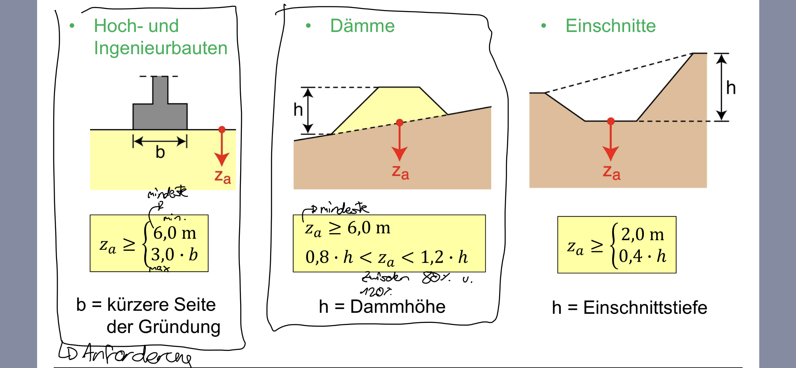
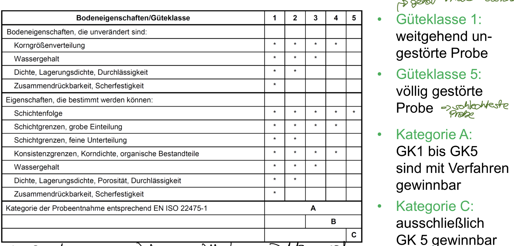
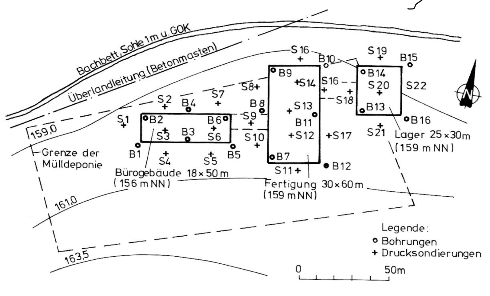

Bohrungen von Böden
Hier gehen wir Brachial vor und entnehmen Proben von den Böden
Methoden¶
Methoden wären dafür - Schürfgruben - Bohrungen
Erkundungstiefen¶
Je nachdem, was das Bauvorhaben ist, ist genormt worden, wie Tief ich eigentlich buddeln muss.

Der obere wert ist immer das mindeste was ich Bohren muss :D
Güteklassen¶
Außerdem habe ich Güteklassen und Kategroien der Probe. Auch diese sind (wer hätte es gedacht) genormt worden :D

Güteklasse 1 wäre also eine Perfekt saubere Probe
Güteklasse 5 wäre das Gegenteil davon
Unten sieht man dann, welche Kategorie man dann mit welcher Güteklasse erreicht werden kann :D
Ansatzpunkte für Bohrungen und Sondierungen¶
so könnte ein Lageplan für Sondierungen und Bohrungen aussehen: 